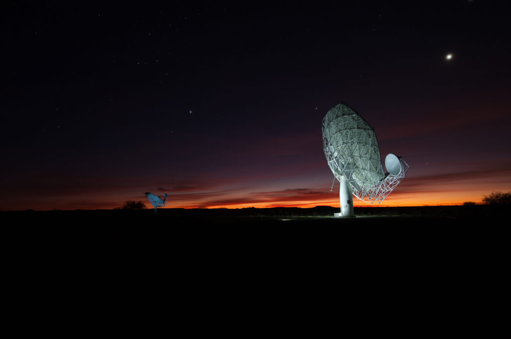

An unbiased view of the cold gas around radio-loud AGNs.
I am a radio astronomer working jointly at the University of Cape Town and SARAO, where I also serve as Astronomer on Duty for MeerKAT. My work sits at the intersection of data-intensive survey astronomy and galaxy evolution: I plan and characterise radio surveys, build and validate large source catalogues, and use them to ask how neutral hydrogen behaves in the immediate environments of powerful radio jets.
I completed my Ph.D. at IUCAA, Pune, under Prof. Neeraj Gupta, on An unbiased view of cold atomic gas associated with radio loud AGNs. Along the way I led the first Stokes I image catalogue data release of the MeerKAT Absorption Line Survey — roughly half a million radio sources — and reported a rare H I 21-cm absorber at z ≈ 1.35, one of the highest-redshift associated absorbers known.
Data-intensive astronomy
Galaxy evolution

A 14-lecture course in radio astronomy for undergraduates
Taught a full fourteen-lecture undergraduate course, from the radio sky and the single dish through interferometry, calibration and imaging to spectral lines and surveys.
Course outline →Co-supervising a Master's student at UCT
Detection and characterisation of radio sources in MeerLIRGs, and the search for morphologically anomalous radio sources.